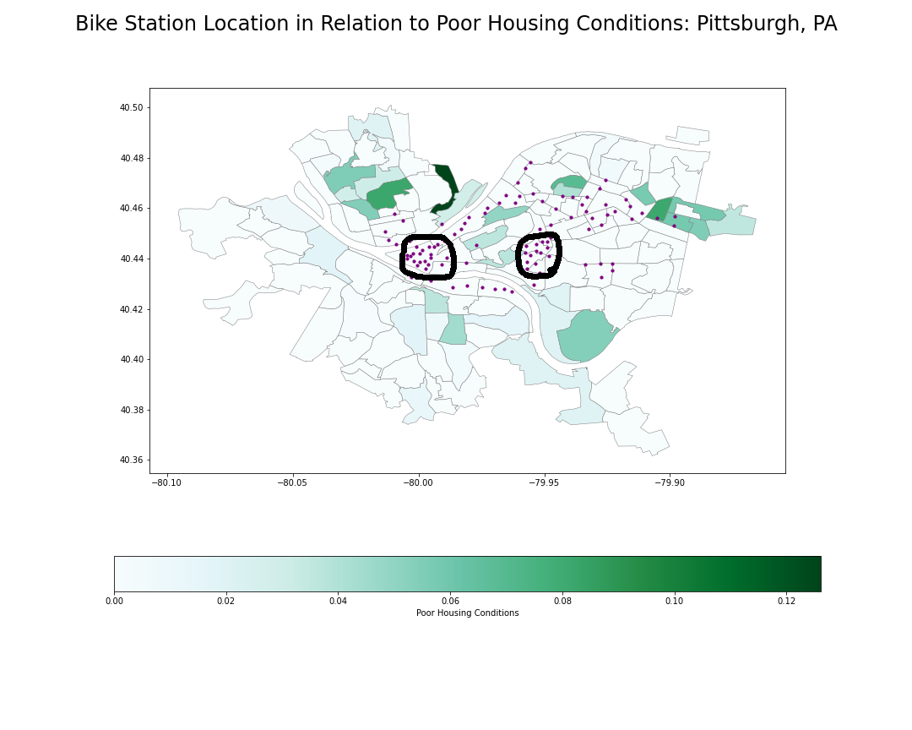

Mapping Bike Sharing Station Locations and Neighborhood Housing Conditions
Having a reliable mode of transportation is necessary for people to maintain jobs. Sustainable and accessible mobility is imperative to the economic growth of a city. After spending a majority of my spring semester researching the public bike sharing system in Manizales, Colombia, I figured it would be worthy to be familiar with the bike sharing program in Pittsburgh.
HealthyRide Bike Sharing Program
The HealthyRide Bike Sharing Program joined Pittsburgh in 2015. From analyzing the data on Western Pennsylvania Regional Data Center (WPRDC), there are currently 88 stations and 1085 total racks available from all the stations combined as of quarter 1 2020[1]. At the time I went through the data, it is unclear if there are actually 1085 bikes or if the capacity of all the stations combined is 1085. There are quite a few articles about the location of these bike stations in relation to the income of neighborhoods. On Google, I searched "HealthyRide Pittsburgh and low income neighborhoods", and found a couple articles raising the issue that there were not enough stations in the lower income neighborhoods in Pittsburgh, but these articles mainly date from 2018. Many of the articles identify that HealthyRide is planning on adding up to 175 stations...but it is two years later from the date of these articles with HealthyRide only reporting 88 stations to the WPRDC [2, 3]. I have plotted the bike station locations below (represented as blue dots) from the coordinates provided in this dataset.
Also these articles have no data source to back up their claims. Be careful when reading any article with claims and no explicit source or data to back it up. To address the claims in these articles [2, 3], I have done some data analysis that presents if HealthyRide stations are located in lower income neighbors.

Bike sharing programs come with a lot of infrastructure, especially if the bikes need to be returned to a station by the end of a ride (not "dockless" program). As with any other bike sharing program that is not "dockless", the location to place a bike station or "rental hub" remains difficult. Researchers have applied machine learning algorithms to optimize the distance between any two given bike stations or to optimize the accessibility of the bike stations between lower income neighborhoods and higher income neighborhoods. Furthermore, a lot of research has been done on the bike sharing system in Manizales, Colombia to identify optimal station locations and optimal accessibility amongst the socioeconomic groups (references to research papers at the end of this post).
[2] Pittsburgh Bike Share Program Missed
[3] Pittsburgh Bike Share is Expanding and Hoping to get More Minority and Low Income Riders on Bikes
HealthyRide Station Location Analysis
Since accessibility was a primary focus area for the bike sharing system in Manizales, Colombia, I decided to find a dataset that could represent the different socioeconomic status levels of each neighborhood in Pittsburgh. This dataset is from the Allegheny County and is publicly available on WPRDC. The data on Poor Housing Conditions is from 2016 and Allegheny County had an outside private company collect the data. This dataset shows the proportions of parcels in poor condition with an average value of 0.02 in Allegheny Count, but I have narrowed down the dataset to only contain neighborhoods within Pittsburgh City Limits.

In the map above, I have plotted the location of the HealthyRide bike stations in purple. The shapes of the neighborhoods have now been assigned a color based on the Poor Housing Conditions scale. For those not familiar with pittsburgh, there are three rivers which meet at a point right around (-80.005, 40.44). Pittsburgh also has very hilly terrain (a topographical feature that is also present in Manizales). From the map above, it is evident that there are two hot spots for the locations of the bike sharing stations. I have circled these two hot spots below in grey. The circled area on the left represents Downtown Pittsburgh and the circled area on the right represents Oakland, a neighborhood in Pittsburgh that is home to three universities and several large hospitals a part of UPMC network.
You can see that in between these two locations, there are 3 HealthyRide bike stations. Those neighborhoods in between Oakland and Downtown include Terrace Village and The Hill District (Upper Hill, Middle Hill). However, I found it very surprising that the Downtown area has a higher rating on the Poor Housing Condition scale than the Hill District since the Hill District has been categorized by many community members as a low income neighborhood.
Another outlier to acknowledge is the darkest green neighborhood on the map. That neighborhood and the two neighborhoods that are horizontal to the right of it are all a part of Homewood (Homewood South, Homewood North, and Homewood West). Those three neighborhoods also have a total of three bike stations. To put the neighborhoods into perspective in terms of distance from downtown, The furthest HealthyRide bike station in Homewood (located at Bennett St & Eccrue Way) is a 7 mile ride to downtown. This station is a 1.5 mile bike ride to Bakery Square/East Liberty which are two neighborhoods that have been experiencing an economic boom in the past few years.
One last outlier to look at is the neighborhood in between Homewood and Oakland that does not have any bike stations. This neighborhood is Squirrel Hill North, which I was unaware of it having poor housing conditions. It is one of the common neighborhoods for students and recent graduates to live to my knowledge, but it is very interesting that the data shows that HealthyRide has missed placing any stations in this neighborhood.
Conclusions
There are more variables to analyze with respect to the bike station locations and the neighborhoods that they are located in. For example, further research can analyze the number of racks or bikes available at any given time in a certain neighborhood and see if this correlates with the socioeconomic status of that neighborhood. Other research can be done to help HealthyRide where the stations should be located based off their current users or based off the income of any given neighborhood. Overall, it is clear that the HealthyRide stations are aggregated in certain neighborhoods more than others and it would be beneficial to even out the location of the bike stations throughout the neighborhoods. This map also shows to an extent quite a few outliers including the situation in Homewood, The Hill District, and Squirrel Hill North. I think there need to be some investigation to identify if this socioeconomic status is the only variable that plays in to where the bike stations will be located.